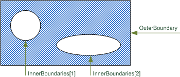

8.13.3.1 IfcAnnotationFillArea
| Zone de remplissage d'annotation |
| Gefüllte (schraffierte) Fläche |
The IfcAnnotationFillArea defines an area by a definite
OuterBoundary, that might include InnerBoundaries. The areas
defined by the InnerBoundaries are excluded from applying the fill
area style. The InnerBoundaries shall not intersect with the
OuterBoundary nor being outside of the OuterBoundary.
The fill area style that is applied to the IfcAnnotationFillArea is
declared using the IfcFillAreaStyle, associated to the area by an
IfcStyledItem. Applicable fill area styles are a solid color, a
hatching, tiles, or a combination of those styles.
NOTE Definition according to ISO 10303-46:
An annotation fill area is a set of curves that may be filled with hatching,
colour or tiling. The annotation fill are is described by boundaries which
consist of non-intersecting, non-self-intersecting closed curves. These curves
form the boundary of planar areas to be filled according to the style for the
annotation fill area.
Figure 347 illustrates annotation fill area.
|  |
|
Figure 347 — Annotation fill area
|
NOTE Entity adapted from
annotation_fill_area defined in ISO10303-46
HISTORY New entity in IFC2x2.
IFC2x3 CHANGE The two attributes
OuterBoundary and InnerBoundaries are added and replace the
previous single boundary.
Informal Propositions:
- Any curve that describes an inner boundary shall not intersect with, nor
include, another curve defining an inner boundary.
- The curve defining the outer boundary shall not intersect with any curve
defining an inner boundary, nor shall it be surrounded by a curve defining an
inner boundary.
XSD Specification:
<xs:element name="IfcAnnotationFillArea" type="ifc:IfcAnnotationFillArea" substitutionGroup="ifc:IfcGeometricRepresentationItem" nillable="true"/>
<xs:complexType name="IfcAnnotationFillArea">
<xs:complexContent>
<xs:extension base="ifc:IfcGeometricRepresentationItem">
<xs:sequence>
<xs:element name="OuterBoundary" type="ifc:IfcCurve" nillable="true"/>
<xs:element name="InnerBoundaries" nillable="true" minOccurs="0">
<xs:complexType>
<xs:sequence>
<xs:element ref="ifc:IfcCurve" maxOccurs="unbounded"/>
</xs:sequence>
<xs:attribute ref="ifc:itemType" fixed="ifc:IfcCurve"/>
<xs:attribute ref="ifc:cType" fixed="set"/>
<xs:attribute ref="ifc:arraySize" use="optional"/>
</xs:complexType>
</xs:element>
</xs:sequence>
</xs:extension>
</xs:complexContent>
</xs:complexType>
EXPRESS Specification:
|
ENTITY IfcAnnotationFillArea
|
 EXPRESS-G diagram
EXPRESS-G diagram
Attribute Definitions:
| OuterBoundary | : |
A closed curve that defines the outer boundary of the fill area. The areas defined by the outer boundary (minus potentially defined inner boundaries) is filled by the fill area style.
IFC2x3 CHANGE The two new attributes OuterBoundary and InnerBoundaries replace the old single attribute Boundaries.
|
| InnerBoundaries | : |
A set of inner curves that define the inner boundaries of the fill area. The areas defined by the inner boundaries are excluded from applying the fill area style.
IFC2x3 CHANGE The two new attributes OuterBoundary and InnerBoundaries replace the old single attribute Boundaries.
|
Inheritance Graph:
|
ENTITY IfcAnnotationFillArea
|
 Link to this page
Link to this page